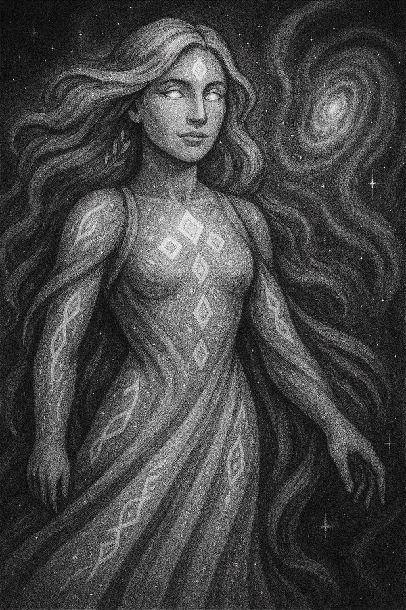

Elysia

Alias: Primordial of Creation
Age / Race / Role: Primordial Eternity / Primordial / Source of Birth, Weaver of Form
Appearance: A luminous entity of infinite flowing light, with cascading strands of energy weaving stars, life, and elements in her wake.
Affinities: Creation, Light, Lifeforce
Threat Tier: Divine-Class
Celestial Attributes
• Power: 10
• Speed: 10
• Technique: 10
• Intelligence: 10
• Defense: 9
• Aura Control: 10
Signature Abilities
• Genesis Pulse
• Cradle of Stars
• Formweaver Cascade
• Lifesurge Convergence
• Birthsong Horizon
Personality
Nurturing and vast. Speaks in universal truths and harmony. Believes all things have purpose and form — even decay.
Divine Domain: Elysium Nexus